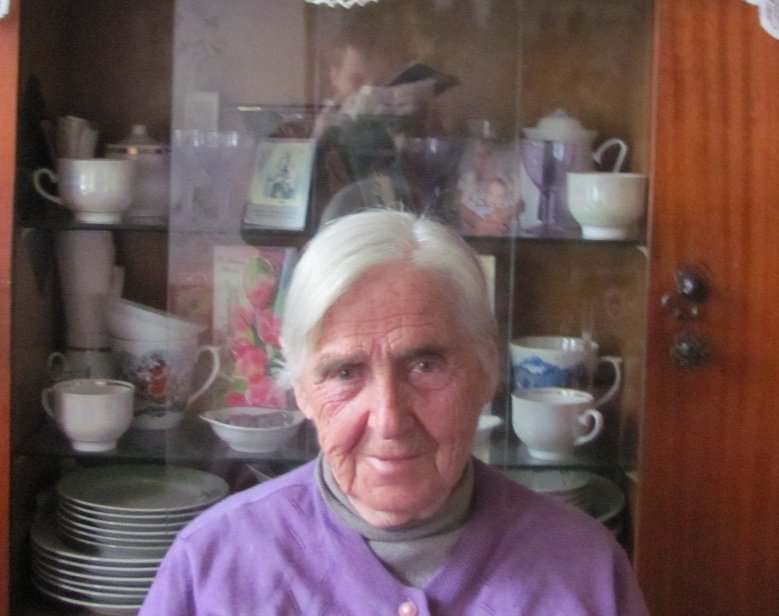
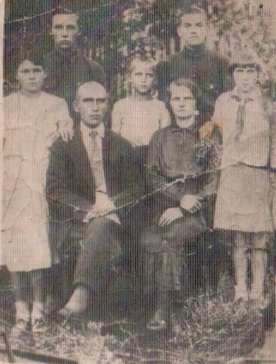

Скоробогатова Любовь Георгиевна
🏡 1. Семья и довоенное детство
Большая дружная семья: отец Георгий Петрович (рабочий кожзавода), мама Дарья Гордеевна, сестра Люда, братья Виталий, Кирилл и брат-близнец Валик.
⚡ 2. Начало войны и оккупация родного края
Отец был призван на фронт, мама эвакуировалась в Казахстан, братья ушли на войну, трое подростков остались одни. Видели гибель детей при авианалетах, зверства карателей над еврейским населением и советскими военнопленными.
⛓️ 3. Облава, арест и отправка в эшелонах
В 1943 г. отступающие нацисты подожгли дом, детей затолкнули в грузовик и увезли через Минск и Слоним в Германию. Брата Валика угнали на запад, сестру Люду оставили в Польше, а 15-летнюю Любу отправили в промышленный трудовой лагерь в Германии.
🌾 4. Рабский труд, испытания и лагеря Германии
Тяжелейший труд у станка на военном заводе, рытье окопов, чистка картофеля, постоянное истощение и страх. От произвола охраняли старшие русские женщины-узницы Вера и Оля.
🕊️ 5. Освобождение союзными и советскими войсками
Освобождена советскими войсками и возвращена на Родину.
🌱 6. Возвращение на пепелище и мирный труд
Вернулись братья и мама, солдаты привезли тяжелобольного отца, который вскоре скончался. Любовь окончила семилетку, работала на кирпичном заводе, окончила Новогрудский финансовый техникум. В 1951 г. вышла замуж за Хмельницкого Фёдора Максимовича и переехала в Микашевичи, вырастила сыновей Владимира и Георгия.
📷 Фотографии и архивные документы (2)
Фото 25. Скоробогатова Л.Г., 2013 год

Фото 26. Семья Скоробогатовых перед войной